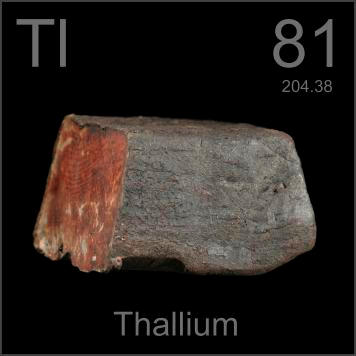

HOME
PREVIOUS
NEXT

Thallium
Atomic Weight: 204.38
Density: 11.85 g/cm3
Melting Point: 304 °C
Boiling Point: 1473 °C
Thallium was used in a few murders before people caught on to its characteristic symptoms. This sizable lump could do in quite a few people, but isn't it pretty? The colors are from layers of thallium oxide.